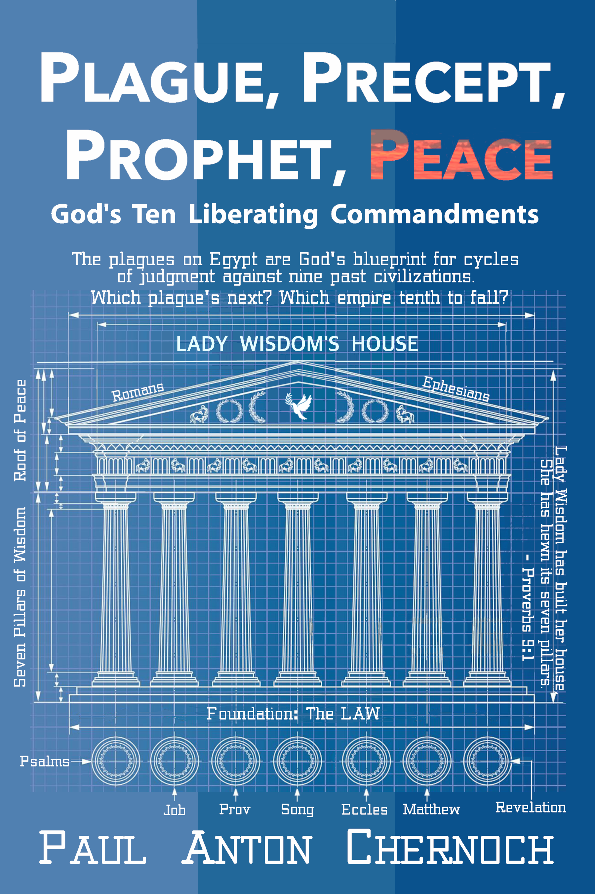

Plague, Precept, Prophet, Peace
God's Ten Liberating Commandments
This page shows:
- The front cover for Plague, Precept, Prophet, Peace
- The table of contents fpr the book
- Perplexity (the book's preface)
- Plan (the second chapter, a chapter outline for the book)
Front Cover

Contents
If a table of contents entry has a hyperlink, then part or all of that chapter is reproduced on this website. In some cases, such essays have been expanded to include new insights.
- Contents
- Bible Versions Quoted
- Dedication
- Illustration: Correlating the Patterns
- Perplexity
- Plan
- Preparing for a Harvest
- The Deep Need for an Answer
- The Shape of a Prophetic Clock
- Architecture of Lady Wisdom’s House
- Ecclesiastes 1: Taking Inventory
- Ecclesiastes 3: Knowing the Acceptable Time
- Job: The Course of Empires
- The Meaning of the Beasts of Job
- Exodus: How Long did the Plagues last?
- Exodus: Called & Summoned to Grow
- Exodus: Clocks of Judgment for Israel & the Church
- Revelation 16: Judging the World
- Freedom, Peace, Joy & Fear
- Which Ten Commandments?
- A Diagnostic for Life
- Job’s Anti-jubilee Clock, Defined
- Prophecies from Abraham to David: Job 1-20
- Prophecies from Solomon to Christ: Job 21-42
- Selah: Stop, Entreat, Listen, Apply, Hear
- Answering Habakkuk
- Songs in the Night: Psalms 1-110
- Acrostic Clock: Psalms 111 and 112
- The Final Ascent: Psalms 113-150
- Psalms of Growth: Psalms 1–28
- Psalm 19: The Glory of God’s Law
- Matthew and the Law of Christ
- A God-shaped Hole
- What did we miss?
- Epilogue: The Fifth Commandment
- End Notes
- Postscript: Because I Promised
- About the Author
{kind=link}
Perplexity
You are flipping through your Bible, searching for peace, when you read a dark saying. You’ve read that passage before. You ask a friend to explain it, then a pastor, then consult a Bible commentary and finally a “Bible Difficulties” website. None of their explanations ring true. Will you begin to doubt the accuracy of the Bible? Question the goodness of God?
This book came about because one Bible verse has driven me crazy for decades. Many books are written by experts. They know the material and can explain it well. I wrote this one not as an expert but as a seeker. I wrote it to chronicle my exploration towards understanding that single Bible verse. When I write fiction, I outline everything, but when I write nonfiction, I am a “discovery writer”. I am not sure where it will lead. I learn as I research and write.
My previous book, Peace, like Solomon Never Knew, explored the meaning of the Bible book of Ecclesiastes. What irony! This is the verse that perplexed me:
The end of the matter; all has been heard.
Fear God and keep his commandments,
for this is the whole duty of man.
- Ecclesiastes 12:13, ESV
That verse is where Solomon summed up all that he had learned. I wrote an entire book about Ecclesiastes but I could not understand its conclusion!
Think of a Bible verse that bothers you. Compare it to mine. I bet you are shaking your head. Why should fearing God and obeying the Ten Commandments be so objectionable? That is not the problem. I struggled with the last phrase, “the whole duty of man”. Ecclesiastes is about the search for a rich, meaningful life of noble purpose. Rote obedience is not a joy inspiring, liberating purpose for life. It is a soul crushing purpose.
Over the years, I tried to reconcile my personal search for meaning with this verse. After my initial rejection, I considered a series of more palatable interpretations. The first hurdle was that the conclusion did not seem to flow from the arguments. To resolve that, I had to do a deep dive into the structure of Ecclesiastes.
Another roadblock was “the fear of the Lord”. I spent years searching for the spiritual treasures that Jesus said we should store up in heaven. In writing another of my books, The Endless Hunt, I discovered that the fear of the Lord is one of the two most important treasures. The good things that are promised (in Psalms, Proverbs and elsewhere) to those who fear the Lord are many.
We are also told that “the fear of the Lord is the beginning of wisdom” (Psalm 111:10 and Proverbs 9:10). Ecclesiastes tells us the next step towards wisdom.
The heart of the wise is in the house of mourning,
but the heart of fools is in the house of mirth.
- Ecclesiastes 7:4, ESV
I wrote Job Rises: Thirteen Keys to a Resilient Life to understand the role of suffering in teaching us wisdom. Between those three books, I had most of the pieces to an answer: the fear of the Lord and its blessings, the productive aspects of suffering, and the structure of a normal human life as found in Ecclesiastes. Two things remained undiscovered: the commandments and how to keep them.
This book is my answer to the question, “How can keeping the commandments of God be a fulfilling and liberating purpose for life?” The wisest man in all the earth told us that they are. If this path seems barren, either Solomon was wrong or we do not know the commandments the way he did. Read on and you will learn that the Ten Commandments are:
- Beautiful (rejoicing the soul)
- Fruitful (producing spiritual harvests)
- Wise (helping us grow to maturity)
- Liberating (affording freedom in how we practice them)
- Powerful (shaping the history of empires)
The commandments do more than forbid. They guide. They shape. They empower. They protect. They contain a channel of grace and guide us toward a sabbath rest, if we follow their mile markers.
Is researching and writing book after book in pursuit of the answer to a single question excessive? Not if you care about the answer. I don’t do it because my life depends upon it. I do it because the meaning of my life depends upon it. Meaninglessness leads many to despair and suicide.
Thirty years ago I asked God what were the most important truths of the Christian faith. I lacked proportion. There were so many rules and doctrines. Over the years, I learned how to spot places where Jesus or an apostle or prophet strongly emphasized a teaching. I began to jot them down and organize them. There is one more verse after my problem verse which is a sterling example of a prophet saying, “Pay attention!” It is not hard to understand. It drives home the critical importance of understanding these matters.
For God will bring every deed into judgment,
with every secret thing, whether good or evil.
- Ecclesiastes 12:14, ESV
Should we be surprised that the plagues on Egypt came before the giving of the precepts of the Law to the prophet Moses? We need to listen to those three voices if we are to find a path to peace. David said words worth repeating:
Open my eyes, that I may behold
wondrous things out of your law.
- Psalm 119:18, ESV
That has been my prayer. I have found wondrous things. Now I will share them with you.
Plan
Exodus speaks of ten plagues of judgment and ten precepts for living, the Ten Commandments. The action centers on a great prophet, Moses, who guides his people through trials towards a land of peace. Thus we have the formula:
Plague, Precept, Prophet, Peace
This essay weaves together strands of thought from the story in Exodus, the Books of Job and Psalms, the Gospel of Matthew, Revelation, and Solomon’s poem of the times and seasons of life in Ecclesiastes 3 to show how true is the adage that the Law is our schoolmaster. As Paul wrote:
Wherefore the law was our schoolmaster
to bring us unto Christ,
that we might be justified by faith.
- Galatians 3:24, KJV
That law begins us along the path to full maturity in the faith, then reaches beyond. It can prove to us that God is sovereign over history by showing how He has laid out in Bible prophecy His plan for all time. This knowledge can strengthen our faith that the Lord will succeed in guiding us to the promised land: a new heaven and a new earth. The signposts along our journey are ten, but to read them we need to decode the patterns that explain their message. The key insights are that:
- Each plague may be paired with its corresponding commandment.
- The sequence of plagues and commandments matches multiple sequences of historical events.
- Each historical sequence is a prophetic structure for the history of God’s acts of judgment operating at a different geographic and temporal scale: against Egypt, Israel, the Church, a series of world empires, or all humanity at once.
- These pairings of plagues, commandments and events give us insight into God’s shifting priorities over time.
- Seeing God’s priority for the present time helps us to understand what God is up to, enabling us to cooperate with the Holy Spirit and advance His kingdom.
These deadly plagues, these lofty precepts,
and this prophetic lens can open our eyes
to the Lord’s path to peace.
Context: The Sevenfold Harvest
This book does not stand alone. This essay further develops ideas introduced in two previous works by the author, available as e-books or paperback:
- Job Rises: Thirteen Keys to a Resilient Life
- Peace, like Solomon Never Knew
It explores one neglected facet in greater detail: the preparation of the heart for spiritual growth. The arguments here may be understood without reading those books, but for detailed proofs of the things asserted, please consult the prior work.
The Gospel of Matthew defines a Harvest Pattern of seven steps: Preparation, Plowing, Planting, Pouring, Plucking, Producing, and Peace. My previous book, Peace, like Solomon Never Knew, explored this pattern extensively, showing how it shapes many other parts of the Bible. That book focused on steps three to seven of the Growth Pattern. It was occupied with mapping out the whole of the path to the seventh step, Peace.
The second step of that pattern is the Plowing of suffering. Overcoming and learning from suffering was the principle subject of Job Rises: Thirteen Keys to a Resilient Life. I did not discover the Harvest Pattern until months after completing that book, which is amusing, as Job is structured to follow that pattern perfectly. Only by reflecting on both Job and Matthew was it possible to discover the pattern.
This current book will address the first of the seven steps, Preparation. I wrestled with understanding all the ideas and activities that contribute to the preparation phase and was dissatisfied with where I left it. I came up with things like baptism, consecration, and the early training in morality that we receive as children. To those fragmentary ideas we can now add one solid core to bind them together: the Law. It is the Ten Commandments which begin the preparation of our souls for many fruitful harvest seasons. Those commandments are not everything, but if you neglect them, you will never make it past square one. Therefore the definition and exploration of the Law Pattern is a major focus of this book.
To really get the Law down solid, it is essential to meditate on it regularly. The Book of Psalms is a series of meditations on the Law. The Psalms are a fundamental part of our preparation for service and this book touches on a few marvelous qualities that the Psalms possess.
The Seven Pillars of Wisdom
The most important result from my prior books is the identification of seven Bible books as the Seven Pillars of Wisdom: Psalms, Job, Proverbs, Song of Songs, Ecclesiastes, Matthew and Revelation. That conclusion was based on the discovery of two interlocking structural and thematic patterns that run though all seven books. The shared patterns are the aforementioned Harvest Pattern and a Growth Pattern. This essay shall explore the Growth Pattern much but the Harvest Pattern little. To these it will add three more, the Law Pattern, the 42-generation Journey Pattern and a Motherhood Pattern. To combine the patterns into a unified framework, we shall explore the meaning of the parable of Lady Wisdom’s house from Proverbs 9:1-3.
References to end notes will be given in square brackets. For brevity, the above books will be cited as Job Rises and Peace, respectively.
Chapter Outline
To help you keep it all straight, here is an overview of the ideas presented in this essay.
Preparing for a Harvest
This is a recap of the sevenfold Harvest Pattern described in Peace. It shows how the Ten Commandments fit into a larger scheme for Christian growth.
The Deep Need for an Answer
Does this book answer a question that you, the reader, need an answer for? I can’t answer that. This chapter does connect the ideas in this book to a deep need that I had for years. That need drove me to search out the answers that I found. If my need resonates with your spirit, then my answers may help you in powerful ways.
The Shape of a Prophetic Clock
Peace spoke at length about prophetic clocks and catalogued thirty-six. This chapter synthesizes ideas from them to propose a strict definition of a prophetic clock and the Biblical evidence required to set them on a firm foundation. It poses thirteen tough questions. If they cannot be answered, the clocks may be illusory or incompletely defined, subject to error or misinterpretation. If they can be answered, the foundation is solid.
Architecture of Lady Wisdom’s House
Proverbs 9:1-2 describes Lady Wisdom’s house. It is a parable. To explain the parable, this chapter unpacks the architectural elements of that house and points to the parts of the Bible or spiritual truth that each indicates. One is the Ten Commandments and the Law.
Ecclesiastes 1: Taking Inventory
There are different categories of prophetic clock. Solomon lists many in Ecclesiastes 1, in a parable here explained.
Ecclesiastes 3: Knowing the Acceptable Time
This recaps the Growth Pattern explored in Peace. That pattern is derived from the poem of the twenty-eight times in Ecclesiastes 3. This chapter solves riddles that enable us to construct a template for human history running from the dedication of Solomon’s temple until the return of Christ. It also discusses the scroll of Revelation and its seven seals.
Job: The Course of Empires
This argues that a series of passages in Job are prophesies pointing to a dozen world empires.
The Meaning of the Beasts of Job
Continuing the analysis of Job’s empires, this shows that if you remove the first and last, the middle ten empires each exemplify the breaking of a different one of the Ten Commandments, in the sequence given in Exodus. Thus the destruction of each is a warning that God systematically upholds His law.
Exodus: How Long did the Plagues Last?
This analyzes the Exodus account of the plagues on Egypt. How long did they last? Does it matter?
Exodus: Called and Summoned to Grow
Pharaoh, Yahweh and Moses repeatedly “call” or “summon” people to confrontational meetings. From the placement of these summonings in the Exodus account we learn of an alternate sevenfold division of the commandments. This division can be used to tie the commandments to the sevenfold Growth Pattern.
Exodus: Clocks of Judgment for Israel and the Church
If you pair each of the Ten Commandments to its corresponding member of the Ten Plagues, you have a richer pattern. That pattern may in turn be matched to the history of Israel. It divides that history into ten eras, each subject to a distinct and corresponding judgment by God. The same is done for the history of the Church.
Revelation 16: Judging the World
The plagues listed in Revelation 16 are compared and contrasted with those in Exodus. Then the seven key structures of judgment in Revelation are shown to be animated by the Seven Spirits of God, in the sequence given by Isaiah 11. The nature of each Spirit explains much about why the judgments occurred in the given order and why those particular punishments were chosen.
Freedom, Peace, Joy & Fear
The findings are summarized and clarified. God has been systematically infusing the world with the spirit of His commandments through sequential, methodically timed, targeted acts of judgment against a series of empires, against Egypt, against Israel, and against the church. We must believe that He will soon do so against the whole world.
Which Ten Commandments?
Jews, Catholics, Orthodox and Protestants divide the text of the Ten Commandments in three different ways. Which is correct? Does it matter? A surprising connection is made between the commandments, the Growth Pattern and the Trinity.
Job’s Anti-jubilee Clock, Defined
Prophecies from Abraham to David: Job 1-20
Prophecies from Solomon to Christ: Job 21-42
At some point in our lives, we all need a year of Jubilee when we are freed even from debts we deserve. In three chapters we revisit Job to discover how his words prophesied the events leading to the greatest jubilee of all: the coming of the Messiah, Jesus Christ.
Selah: Stop, Entreat, Listen, Apply, Hear
Answering Habakkuk
Songs in the Night: Psalms 1-110
Acrostic Clock: Psalms 111-112
The Final Ascent: Psalms 113-150
Psalms of Growth: Psalms 1-28
Psalm 19: The Glory of God’s Law
These seven chapters explore patterns in the Psalms (as well as a psalm found in Habakkuk), many prophetic. They demonstrate that the whole Book of Psalms forms a giant prophetic clock running from the Creation until Christ returns. We start with all 150 psalms, then narrow focus to the first 28 psalms and then again to just Psalm 19, called by C.S. Lewis the greatest of the psalms.
Matthew and the Law of Christ
The Gospel of Matthew is carefully structured around the Ten Commandments. This chapter shows how. It works out a Law Pattern and shows how it combines both the Harvest and Growth Patterns into a larger pattern.
A God-shaped Hole
Job had a hole in his heart. What was its shape? What did God fill it with? What is the shape of the hole in your heart? This chapter formulates completeness criteria for deciding if there are holes in the arguments of this book.
What did we miss?
Looks for holes in this book using the criteria spelled out in the previous chapter and ties everything up with a bow. The conclusion zeroes in on the heart of wisdom. It also offers a reason to believe that the four prophetic patterns explored in this book are a complete set. That list consists of the Harvest, Growth, Law and 42-generation Journey Patterns.
Epilogue: The Fifth Commandment
This proves that my boast in the prior chapter was hollow. There is another pattern: the Motherhood Pattern. It is a variant of the Growth Pattern which explains the separate trajectory followed through history by women.
What Makes this Book Different
There are many Christian books that give principles for spiritual growth. They use case studies from Christian counselors, theology, and Bible illustrations to advise you in how to mature as an individual and overcome emotional and spiritual trials. The focus is on growing stronger individuals, families or churches.
Then there are many books on Bible prophecy. Some are apologetic. They seek to prove the truthfulness of the Bible and Christianity by showing how key world events in the past were predicted by the prophets and apostles. They may extend this to current events, to show that God’s plans continue to unfold and to warn and prepare people for problems that lie ahead. The focus is not on individuals but on the church or world as a whole, as well as specific empires or nations.
What if it is the world’s chaos that is making you afraid? Are there spiritual principles that can bridge the gap between the individual and the world? Do societal crises invalidate the Bible’s individual spiritual growth principles? Do we need new rules for living to handle the modern age?
This book connects patterns for individual spiritual growth (the Law, Harvest and Growth Patterns) to world history via prophecy. By showing that prophesied events conform to themes that follow the same patterns at the global level that spiritual growth follows at the individual level, we make an important connection. If Christians individually and collectively plan their lives according to these patterns, God’s will shall also be accomplished on a global level. “Thy kingdom come, thy will be done, on earth as it is in heaven.” Furthermore, the fact that God’s judgments and acts of mercy on a global level match these patterns proves that they are powerful enough to serve you personally.
To accomplish these goals and draw new wisdom from the Bible texts is not a simple matter. It requires a paradigm shift in how Scripture is interpreted. This phrase is not tossed about lightly but is used in the spirit intended by Thomas Kuhn in his book The Structure of Scientific Revolutions (1962).
Consequently, this book sets forth new hermeneutical principles, then applies them. The new principles are derived by comparing Scripture to history and observing parallel patterns in each. Without those new principles and wholesale reinterpretation of much of Scripture, it would be impossible to incorporate the ideas presented in this book into existing theology. Crucially, in conjunction with my former book, Peace, Like Solomon Never Knew, this book rebuilds eschatology, the theology of the end times, from the ground up. It contradicts all prior theories on numerous points. The existing system closest in spirit to the ideas in this book is the Historicist approach.
The Ten Commandments that God uses to rule the nations are an effective means to govern your own life, if you understand them. They are more than rules; they include a channel of grace and blessing that can flood your soul with peace. That channel of grace flows through the Gospel of Matthew, which transforms the Law of Moses into the Law of Christ. You will see how the commandments correspond, clause by clause, in rigorous sequence to each chapter of Mathew. With this insight into how to read and understand that gospel, you will see how Christ fulfilled the law and what fulfilling the law by the Spirit can do for you.
Note: You may find it helpful to refer periodically to the chart preceding this opening chapter as the book proceeds. It shows the marvelous correspondence between the several Biblical patterns that are explored in this book. Those are the Harvest, Growth, Law and Motherhood (aka Childbearing) Patterns and the Seven Pillars of Wisdom.